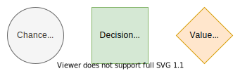

Influence Diagram
Introduction
Decision programming uses influence diagrams, a generalization of Bayesian networks, to model multi-stage decision problems under uncertainty. This section defines the influence diagrams and discusses their properties. It is based on the definitions in [1], [2], and [3].
Definition

We define the influence diagram as a directed, acyclic graph $G=(C,D,V,I,S).$ We describe the nodes $N=C∪D∪V$ with $C∪D=\{1,...,n\}$ and $n=|C|+|D|$ as follows:
- Chance nodes $C⊆\{1,...,n\}$ (circles) represent uncertain events associated with random variables.
- Decision nodes $D⊆\{1,...,n\}$ (squares) correspond to decisions among discrete alternatives.
- Value nodes $V=\{n+1,...,n+|V|\}$ (diamonds) represent consequences that result from the realizations of random variables at chance nodes and the decisions made at decision nodes.
We define the information set $I$ of node $j∈N$ as
\[I(j)⊆\{i∈C∪D∣i<j\}\]
Practically, the information set is a collection of arcs to reverse direction in the graph. The conditions enforce that the graph is acyclic, and there are no arcs from value nodes to other nodes.
In an influence diagram, each chance and decision node $j∈C∪D$ is associates with a finite number of states $S_j$ that we encode using integers $S_j=\{1,...,|S_j|\}$ from one to number of states $|S_j|≥1.$ A node $j$ is trivial if it has only one state, $|S_j|=1.$ We refer to the collection of all states $S=\{S_1,...,S_n\}$ as the state space.
Root and Leaf Nodes
Chance or decision node is a root node if it is not affected by other chance or decision nodes. Formally, node $j∈C∪D$ is a root node if $I(j)=∅.$
Chance or decision node is a leaf node if it does not affect other chance or decision nodes. Formally, node $j∈C∪D$ is a leaf node if $j∉I(i)$ for all $i∈C∪D.$
Drawing Nodes and Arcs

We use a circle to represent chance nodes, a square to represent decision nodes, and a diamond to represent value nodes. The symbol $i$ represents the node's index and symbol $S_i$ the states of the chance or decision node. We use the following colors and styling:
- Chance nodes: Fill color
F5F5F5and line color666666. - Decision nodes: Fill color
D5E8D4and line color82B366 - Value nodes: Fill color
FFE6CCand line colorD79B00 - Linewidth
2ptand perimeter2pt(padding around the node).
We represent directed arcs using arrows from a source node to a target node, colored with the target node's line color. We recommend diagrams.net for drawing graphs.
Drawing Layered Graph

We showed the influence diagram as a linear graph in the Definition section. We can also draw a more concise layered graph, which is better at displaying the influence relationship structure — only nodes at smaller depth influence nodes at greater depth. Also, root and leaf nodes are visible from the layered form.
We define the depth of a node $j∈N$ as follows. Root nodes have a depth of one
\[\operatorname{depth}(j)=1,\quad I(j)=∅.\]
Other nodes have a depth of one greater than the maximum depth of its predecessors
\[\operatorname{depth}(j)=\max_{i∈I(j)} \operatorname{depth}(i) + 1,\quad I(j)≠∅.\]
We can then draw the layered graph by grouping the nodes by their depth, ordering the groups by increasing depth and increasing indices order within each group.
Paths

In influence diagrams, paths represent realizations of states for chance and decision nodes. For example, the above tree represents generating all paths with states $S_1=\{1,2\}$ and $S_2=\{1,2,3\}.$
Formally, a path is a sequence of states
\[𝐬=(s_1, s_2, ...,s_n)∈𝐒,\]
where each state $s_i∈S_i$ for all chance and decision nodes $i∈C∪D.$ We denote the set of paths as
\[𝐒=∏_{j∈C∪D} S_j=S_1×S_2×...×S_n.\]
We define a subpath of $𝐬$ with $A⊆C∪D$ is a subsequence
\[𝐬_A=(𝐬_{i}∣i∈A)∈𝐒_A.\]
We denote the set of subpaths as
\[𝐒_A=∏_{i∈A} S_i.\]
We define the number of paths as
\[|𝐒_A|=∏_{i∈A}|S_i|.\]
We refer to subpath $𝐬_{I(j)}$ as an information path and subpaths $𝐒_{I(j)}$ as information paths for a node $j∈N.$
Also note that $𝐒=𝐒_{C∪D},$ and $𝐒_{i}=S_i$ and $𝐬_i=s_i$ where $i∈C∪D$ is an individual node.
Probabilities
Each chance node is associated with a discrete probability distribution over its states for every information path. Formally, for each chance node $j∈C$, we denote the probability of state $s_j$ given information path $𝐬_{I(j)}$ as
\[ℙ(X_j=s_j∣X_{I(j)}=𝐬_{I(j)})∈[0, 1],\]
with
\[∑_{s_j∈S_j} ℙ(X_j=s_j∣X_{I(j)}=𝐬_{I(j)}) = 1.\]
We refer to chance state with given information path as active if its probability is nonzero
\[ℙ(X_j=s_j∣X_{I(j)}=𝐬_{I(j)})>0.\]
Otherwise, it is inactive.
Decision Strategies
Each decision strategy models how the decision maker chooses a state $s_j∈S_j$ given an information path $𝐬_{I(j)}$ at decision node $j∈D.$ Decision node is a special type of chance node, such that the probability of the chosen state given an information path is fixed to one
\[ℙ(X_j=s_j∣X_{I(j)}=𝐬_{I(j)})=1.\]
By definition, the probabilities for other states are zero.
Formally, for each decision node $j∈D,$ a local decision strategy is function that maps an information path $𝐬_{I(j)}$ to a state $s_j$
\[Z_j:𝐒_{I(j)}↦S_j.\]
A decision strategy contains one local decision strategy for each decision node
\[Z=\{Z_j∣j∈D\}.\]
The set of all decision strategies is denoted $ℤ.$
Path Probability
The probability distributions at chance and decision nodes define the probability distribution over all paths $𝐬∈𝐒,$ which depends on the decision strategy $Z∈ℤ.$ We refer to it as the path probability
\[ℙ(X=𝐬∣Z) = ∏_{j∈C∪D} ℙ(X_j=𝐬_j∣X_{I(j)}=𝐬_{I(j)}).\]
We can decompose the path probability into two parts
\[ℙ(X=𝐬∣Z) = p(𝐬) q(𝐬∣Z).\]
The first part consists of the probability contributed by the chance nodes. We refer to it as the upper bound of path probability
\[p(𝐬) = ∏_{j∈C} ℙ(X_j=𝐬_j∣X_{I(j)}=𝐬_{I(j)}).\]
The second part consists of the probability contributed by the decision nodes.
\[q(𝐬∣Z) = ∏_{j∈D} ℙ(X_j=𝐬_j∣X_{I(j)}=𝐬_{I(j)}).\]
Because the probabilities of decision nodes are defined as one or zero depending on the decision strategy, we can simplify the second part to an indicator function
\[q(𝐬∣Z)=\begin{cases} 1, & Z(𝐬) \\ 0, & \text{otherwise} \end{cases}.\]
The expression $Z(𝐬)$ indicates whether a decision stategy is compatible with the path $𝐬,$ that is, if each local decision strategy chooses a state on the path. Formally, we have
\[Z(𝐬) ↔ ⋀_{j∈D} (Z_j(𝐬_{I(j)})=𝐬_j).\]
Now the path probability equals the upper bound if the path is compatible with given decision strategy. Otherwise, the path probability is zero. Formally, we have
\[ℙ(𝐬∣X,Z)= \begin{cases} p(𝐬), & Z(𝐬) \\ 0, & \text{otherwise} \end{cases}.\]
Consequences
For each value node $j∈V$, we define the consequence given information path $𝐬_{I(j)}$ as
\[Y_j:𝐒_{I(j)}↦ℂ,\]
where $ℂ$ is the set of real-valued consequences.
Path Utility
The utility function is a function that maps consequences to real-valued utility
\[U:ℂ^{|V|}↦ℝ.\]
The path utility is defined as the utility function acting on the consequences of value nodes given their information paths
\[\mathcal{U}(𝐬) = U(\{Y_j(𝐬_{I(j)}) ∣ j∈V\}).\]
The default path utility is the sum of consequences
\[\mathcal{U}(𝐬) = ∑_{j∈V} Y_j(𝐬_{I(j)}).\]
The utility function, in this case, corresponds to the sum of the elements.
The utility function affects the objectives discussed Decision Model page. We can choose the utility function such that the path utility function either returns:
- a numerical value, which leads to a mixed-integer linear programming (MILP) formulation or
- a linear function with real and integer-valued variables leads to a mixed-integer quadratic programming (MIQP) formulation.
Different formulations require a solver capable of solving them.
Path Distribution
A path distribution is a pair
\[(ℙ(X=𝐬∣Z), \mathcal{U}(𝐬))\]
that comprises of path probability function and path utility function over paths $𝐬∈𝐒$ conditional to the decision strategy $Z.$
References
- 1Salo, A., Andelmin, J., & Oliveira, F. (2019). Decision Programming for Multi-Stage Optimization under Uncertainty, 1–35. Retrieved from http://arxiv.org/abs/1910.09196
- 2Howard, R. A., & Matheson, J. E. (2005). Influence diagrams. Decision Analysis, 2(3), 127-143. https://doi.org/10.1287/deca.1050.0020
- 3Shachter, R. D. (1986). Evaluating influence diagrams. Operations research, 34(6), 871-882. https://doi.org/10.1287/opre.34.6.871